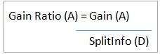
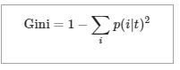
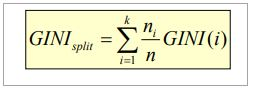

Decision tree
Classification / Logic based algorithim / Decision trees
Decision Tree Mining is a type of data mining technique that is used to build Classification Models. It builds classification models in the form of a tree-like structure, just like its name. This type of mining belongs to supervised class learning.
In supervised learning, the target result is already known. Decision trees can be used for both categorical and numerical data. The categorical data represent gender, marital status, etc. while the numerical data represent age, temperature, etc.

What Is The Use Of A Decision Tree?
Decision Tree is used to build classification and regression models. It is used to create data models that will predict class labels or values for the decision-making process. The models are built from the training dataset fed to the system (supervised learning).
Using a decision tree, we can visualize the decisions that make it easy to understand and thus it is a popular data mining technique.
Classification Analysis
Data Classification is a form of analysis which builds a model that describes important class variables. For example, a model built to categorize bank loan applications as safe or risky. Classification methods are used in machine learning, and pattern recognition.
Application of classification includes fraud detection, medical diagnosis, target marketing, etc. The output of the classification problem is taken as “Mode” of all observed values of the terminal node.
A two-step process is followed, to build a classification model.
- In the first step i.e. learning: A classification model based on training data is built.
- In the second step i.e. Classification, the accuracy of the model is checked and then the model is used to classify new data. The class labels presented here are in the form of discrete values such as “yes” or “no”, “safe” or “risky”.

Regression Analysis
Regression analysis is used for the prediction of numeric attributes.
Numeric attributes are also called continuous values. A model built to predict the continuous values instead of class labels is called the regression model. The output of regression analysis is the “Mean” of all observed values of the node.
How Does A Decision Tree Work?
A decision tree is a supervised learning algorithm that works for both discrete and continuous variables. It splits the dataset into subsets on the basis of the most significant attribute in the dataset. How the decision tree identifies this attribute and how this splitting is done is decided by the algorithms.
The most significant predictor is designated as the root node, splitting is done to form sub-nodes called decision nodes, and the nodes which do not split further are terminal or leaf nodes.
In the decision tree, the dataset is divided into homogeneous and non-overlapping regions. It follows a top-down approach as the top region presents all the observations at a single place which splits into two or more branches that further split. This approach is also called a greedy approach as it only considers the current node between the worked on without focusing on the future nodes.
The decision tree algorithms will continue running until a stop criteria such as the minimum number of observations etc. is reached.
Once a decision tree is built, many nodes may represent outliers or noisy data. Tree pruning method is applied to remove unwanted data. This, in turn, improves the accuracy of the classification model.
To find the accuracy of the model, a test set consisting of test tuples and class labels is used. The percentages of the test set tuples are correctly classified by the model to identify the accuracy of the model. If the model is found to be accurate then it is used to classify the data tuples for which the class labels are not known.
Some of the decision tree algorithms include Hunt’s Algorithm, ID3, CD4.5, and CART.
Example of Creating a Decision Tree
- Learning Step: The training data is fed into the system to be analyzed by a classification algorithm. In this example, the class label is the attribute i.e. “loan decision”. The model built from this training data is represented in the form of decision rules.
- Classification: Test dataset are fed to the model to check the accuracy of the classification rule. If the model gives acceptable results then it is applied to a new dataset with unknown class variables.

Decision Tree Induction Algorithm

Decision Tree Induction
Decision tree induction is the method of learning the decision trees from the training set. The training set consists of attributes and class labels. Applications of decision tree induction include astronomy, financial analysis, medical diagnosis, manufacturing, and production.
A decision tree is a flowchart tree-like structure that is made from training set tuples. The dataset is broken down into smaller subsets and is present in the form of nodes of a tree. The tree structure has a root node, internal nodes or decision nodes, leaf node, and branches.
The root node is the topmost node. It represents the best attribute selected for classification. Internal nodes of the decision nodes represent a test of an attribute of the dataset leaf node or terminal node which represents the classification or decision label. The branches show the outcome of the test performed.
Some decision trees only have binary nodes, that means exactly two branches of a node, while some decision trees are non-binary.
The image below shows the decision tree for the Titanic dataset to predict whether the passenger will survive or not.

CART
CART model i.e. Classification and Regression Models is a decision tree algorithm for building models. Decision Tree model where the target values have a discrete nature is called classification models.
A discrete value is a finite or countably infinite set of values, For Example, age, size, etc. The models where the target values are represented by continuous values are usually numbers that are called Regression Models. Continuous variables are floating-point variables. These two models together are called CART.
CART uses Gini Index as Classification matrix.
Decision Tree Induction for Machine Learning: ID3
In the late 1970s and early 1980s, J.Ross Quinlan was a researcher who built a decision tree algorithm for machine learning. This algorithm is known as ID3, Iterative Dichotomiser. This algorithm was an extension of the concept learning systems described by E.B Hunt, J, and Marin.
ID3 later came to be known as C4.5. ID3 and C4.5 follow a greedy top-down approach for constructing decision trees. The algorithm starts with a training dataset with class labels that are portioned into smaller subsets as the tree is being constructed.
- Initially, there are three parameters i.e. attribute list, attribute selection method and data partition. The attribute list describes the attributes of the training set tuples.
- The attribute selection method describes the method for selecting the best attribute for discrimination among tuples. The methods used for attribute selection can either be Information Gain or Gini Index.
- The structure of the tree (binary or non-binary) is decided by the attribute selection method.
- When constructing a decision tree, it starts as a single node representing the tuples.
- If the root node tuples represent different class labels, then it calls an attribute selection method to split or partition the tuples. The step will lead to the formation of branches and decision nodes.
- The splitting method will determine which attribute should be selected to partition the data tuples. It also determines the branches to be grown from the node according to the test outcome. The main motive of the splitting criteria is that the partition at each branch of the decision tree should represent the same class label.
- The above partitioning steps are followed recursively to form a decision tree for the training dataset tuples.
- The portioning stops only when either all the partitions are made or when the remaining tuples cannot be partitioned further.
- The complexity of the algorithm is described by n * |D| * log |D| where n is the number of attributes in training dataset D and |D| is the number of tuples.

What Is Greedy Recursive Binary Splitting?
In the binary splitting method, the tuples are split and each split cost function is calculated. The lowest cost split is selected. The splitting method is binary which is formed as 2 branches. It is recursive in nature as the same method (calculating the cost) is used for splitting the other tuples of the dataset.
This algorithm is called as greedy as it focuses only on the current node. It focuses on lowering its cost, while the other nodes are ignored.
How To Select Attributes For Creating A Tree?
Attribute selection measures are also called splitting rules to decide how the tuples are going to split. The splitting criteria are used to best partition the dataset. These measures provide a ranking to the attributes for partitioning the training tuples.
The most popular methods of selecting the attribute are information gain, Gini index.
-
Information Gain
This method is the main method that is used to build decision trees. It reduces the information that is required to classify the tuples. It reduces the number of tests that are needed to classify the given tuple. The attribute with the highest information gain is selected.
The original information needed for classification of a tuple in dataset D is given by:

Where p is the probability that the tuple belongs to class C. The information is encoded in bits, therefore, log to the base 2 is used. E(s) represents the average amount of information required to find out the class label of dataset D. This information gain is also called Entropy.
The information required for exact classification after portioning is given by the formula:

Where P (c) is the weight of partition. This information represents the information needed to classify the dataset D on portioning by X.
Information gain is the difference between the original and expected information that is required to classify the tuples of dataset D.

Gain is the reduction of information that is required by knowing the value of X. The attribute with the highest information gain is chosen as “best”.
-
Gain Ratio
Information gain might sometimes result in portioning useless for classification. However, the Gain ratio splits the training data set into partitions and considers the number of tuples of the outcome with respect to the total tuples. The attribute with the max gain ratio is used as a splitting attribute.

-
Gini Index
Gini Index is calculated for binary variables only. It measures the impurity in training tuples of dataset D, as

P is the probability that tuple belongs to class C. The Gini index that is calculated for binary split dataset D by attribute A is given by:

Where n is the nth partition of the dataset D.
The reduction in impurity is given by the difference of the Gini index of the original dataset D and Gini index after partition by attribute A.
The maximum reduction in impurity or max Gini index is selected as the best attribute for splitting.
Overfitting In Decision Trees
Overfitting happens when a decision tree tries to be as perfect as possible by increasing the depth of tests and thereby reduces the error. This results in very complex trees and leads to overfitting.
Overfitting reduces the predictive nature of the decision tree. The approaches to avoid overfitting of the trees include pre pruning and post pruning.
What Is Tree Pruning?
Pruning is the method of removing the unused branches from the decision tree. Some branches of the decision tree might represent outliers or noisy data.
Tree pruning is the method to reduce the unwanted branches of the tree. This will reduce the complexity of the tree and help in effective predictive analysis. It reduces the overfitting as it removes the unimportant branches from the trees.
There are two ways of pruning the tree:
-
Prepruning: In this approach, the construction of the decision tree is stopped early. It means it is decided not to further partition the branches. The last node constructed becomes the leaf node and this leaf node may hold the most frequent class among the tuples.
The attribute selection measures are used to find out the weightage of the split. Threshold values are prescribed to decide which splits are regarded as useful. If the portioning of the node results in splitting by falling below threshold then the process is halted.
-
Postpruning: This method removes the outlier branches from a fully grown tree. The unwanted branches are removed and replaced by a leaf node denoting the most frequent class label. This technique requires more computation than prepruning, however, it is more reliable.
The pruned trees are more precise and compact when compared to unpruned trees but they carry a disadvantage of replication and repetition.
Repetition occurs when the same attribute is tested again and again along a branch of a tree. Replication occurs when the duplicate subtrees are present within the tree. These issues can be solved by multivariate splits.